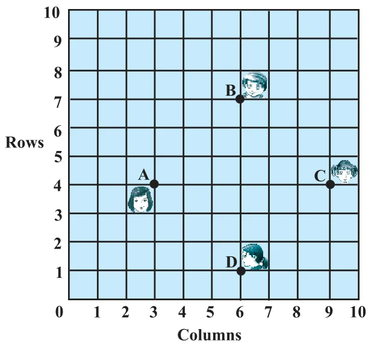

EXERCISE 7.1
- 1.Find the distance between the following pairs of points :
- (i)(2, 3), (4, 1)
- (ii)(–5, 7), (–1, 3)
- (iii)\((a, b), (-a, -b)\)
- 2.Find the distance between the points (0, 0) and (36, 15). Can you now find the distance between the two towns A and B discussed in Section 7.2.
- 3.Determine if the points (1, 5), (2, 3) and (– 2, – 11) are collinear.
- 4.Check whether (5, – 2), (6, 4) and (7, – 2) are the vertices of an isosceles triangle.
- 5.In a classroom, 4 friends are seated at the points A, B, C and D as shown in Fig. 7.8. Champa and Chameli walk into the class and after observing for a few minutes Champa asks Chameli, “Don’t you think ABCD is a square?” Chameli disagrees. Using distance formula, find which of them is correct.

- 6.Name the type of quadrilateral formed, if any, by the following points, and give reasons for your answer:
- (i)(– 1, – 2), (1, 0), (– 1, 2), (– 3, 0)
- (ii)(–3, 5), (3, 1), (0, 3), (–1, – 4)
- (iii)(4, 5), (7, 6), (4, 3), (1, 2)
- 7.Find the point on the x-axis which is equidistant from (2, –5) and (–2, 9).
- 8.Find the values of y for which the distance between the points P(2, – 3) and Q(10, y) is 10 units.
- 9.If Q(0, 1) is equidistant from P(5, –3) and R(x, 6), find the values of x. Also find the distances QR and PR.
- 10.Find a relation between x and y such that the point (x, y) is equidistant from the point (3, 6) and (– 3, 4).